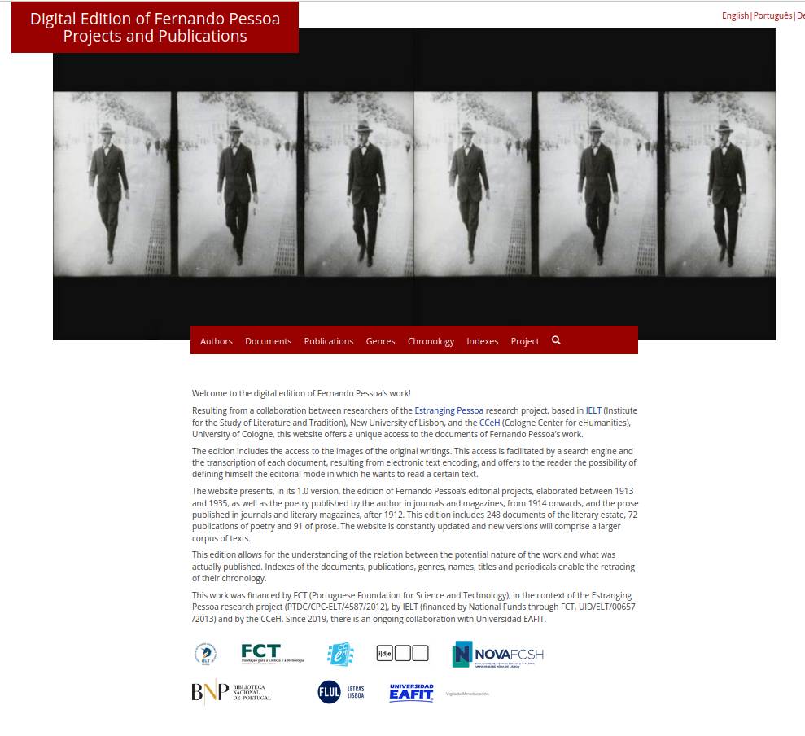

Arquivos e edições digitais de Fernando Pessoa:
uma comparação de aproximações editoriais à obra pessoana no Arquivo Pessoa, Arquivo LdoD, em Fausto Digital e pessoadigital.pt
Ulrike Henny-Krahmer
(Universidade de Rostock)
"Congresso Internacional Fernando Pessoa"
Fundação Calouste Gulbenkian, Lisboa, e online, October 14, 2021.
Slides em: https://hennyu.github.io/cifp_21/

Introdução
Introdução
- A obra de Fernando Pessoa:
- grande número de textos
- vasta gama de géneros
- perspectivas diversas de autoria
- dispersão em termos de planeamento, edição e publicação
- Especial relevância de arquivos e edições
Introdução
- Quatro iniciativas digitais de arquivo/edição:
- Arquivo Pessoa (Areal, ed., 2008)
- Fausto Digital (Centro de Estudos de Teatro, ed., 2015)
- Arquivo LdoD (Portela e Rito Silva, eds., 2017)
- Edição Digital de Fernando Pessoa (Sepúlveda, Henny-Krahmer e Uribe, eds., 2017)
- Como é que se relacionam com o paradigma digital de editar?
Edições digitais académicas e o paradigma digital
a edição académica:
“A scholarly edition is the critical representation of historic documents” (Sahle, 2016: 23)
a edição académica digital:
“Scholarly digital editions are scholarly editions that are guided by a digital paradigm in their theory, method and practice” (Sahle, 2016, 28)
Aspectos do paradigma digital
- integração completa de fac-símiles digitais dos documentos históricos
- codificação detalhada do texto na edição digital
- transmedialização (separação da representação do texto e a sua apresentação)
- funcionalidades alargadas e interactividade na apresentação
- publicação “fluida”
- edição mais social
(Cf. Sahle, 2016: 28-33)
a edição académica digital (outra vez)
“When not only the working methods are digital, but also the outcome (or one of the outcomes) of such a work, then we can normally talk of a digital edition” (Pierazzo, 2014: 22)
“While books all behave more or less in the same way, with some notable exceptions, digital editions are all different, and the things they can do diverge considerably; this is because while the print technology has developed standard editorial templates and formats, more or less constrained by the physical boundaries of pages and bindings, the digital medium is still experimenting with the available possibilities and is not limited by space. This perhaps represents one of the most compelling reasons why we should produce digital editions to begin with, namely because it is possible to do new things, things that were not possible before.” (Pierazzo, 2014: 39)
Quatro recursos digitais sobre Fernando Pessoa
Arquivo Pessoa
Fausto Digital
Arquivo Digital Colaborativo do Livro do Desassossego (Arquivo LdoD)

Edição Digital de Fernando Pessoa. Projectos e Publicações (pessoadigital.pt)
Conclusões e perspectivas
Conclusões e perspectivas
- Os quatro recursos digitais sobre Fernando Pessoa:
- tornam a complexa obra do autor acessível de novas formas
- tendem a apresentações em forma de arquivos editados (mais do que edições críticas)
- desafios: a “publicação fluida” e a disponibilidade permanente / fiabilidade / sustentabilidade
- perspectivas: armazenar os dados subjacentes, organizar a durabilidade dos projectos
Obrigada!
Slides em: https://hennyu.github.io/cifp_21/
Bibliografia
- Areal, Leonor (2008). Arquivo Pessoa. Lisboa: Obra Aberta CRL. http://arquivopessoa.net (consultado a 30 de Abril de 2021).
- Cabral Martins, Fernando (2014). Introdução ao Estudo de Fernando Pessoa. Assírio & Alvim.
- Centro de Estudos de Teatro (2015). Fausto Digital - Base de dados textual. http://www.faustodigital.com/ (consultado a 30 de Abril de 2021).
- Oltmanns, Elias, Tim Hasler, Wolfgang Peters-Kottig e Heinz-Günter Kuper (2019): “Different Preservation Levels: The Case of Scholarly Digital Editions.” Data Science Journal 18 (1.51). DOI: 10/ghwftj.
- Pierazzo, Elena (2014). Digital Scholarly Editing. Theories, Models and Methods. HAL CCSD. http://hal.univ-grenoble-alpes.fr/hal-01182162 (consultado a 30 de Abril de 2021).
- Portela, Manuel e António Rito Silva, orgs. (2017). Arquivo LdoD: Arquivo Digital Colaborativo do Livro do Desassossego. Coimbra: Centro de Literatura Portuguesa da Universidade de Coimbra. https://ldod.uc.pt/ (consultado a 30 de Abril de 2021).
- Sahle, Patrick (2016): “What is a Scholarly Digital Edition?”, em: Digital Scholarly Editing: Theories and Practices. Editado por Matthew James Driscoll e Elena Pierazzo. Cambridge: Open Book Publishers: 19-39. DOI: 10.11647/OBP.0095.02.
- Sahle, Patrick, Georg Vogeler e os membros do IDE (2014): “Criteria for Reviewing Scholarly Digital Editions, version 1.1”, Institut für Dokumentologie und Editorik. https://www.i-d-e.de/publikationen/weitereschriften/criteria-version-1-1/ (consultado a 30 de Abril de 2021).
- Sepúlveda, Pedro (2013). Os livros de Fernando Pessoa. Lisboa: Ática.
- Sepúlveda, Pedro, Ulrike Henny-Krahmer e Jorge Uribe, eds. (2017-2021). Edição Digital de Fernando Pessoa. Projetos e Publicações. Lisboa e Colónia: IELT, Universidade Nova de Lisboa e CCeH, Universidade de Colónia. http://www.pessoadigital.pt (consultado a 30 de Abril de 2021). DOI: 10.18716/cceh/pessoa.